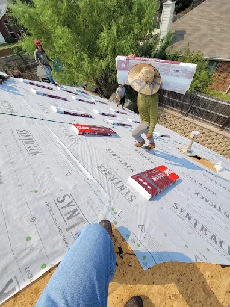

DEMO PROJECT · ILLUSTRATIVE01 / ROOF REPAIR
A leak after heavy rain.
A homeowner notices water staining inside the house and wants to understand where it’s coming from.
- What an inspection could explore
- Roof condition, flashing, and the area associated with the reported leak.
- Possible next step
- Discuss a targeted repair if the inspection supports it, or explain other work that may be needed.